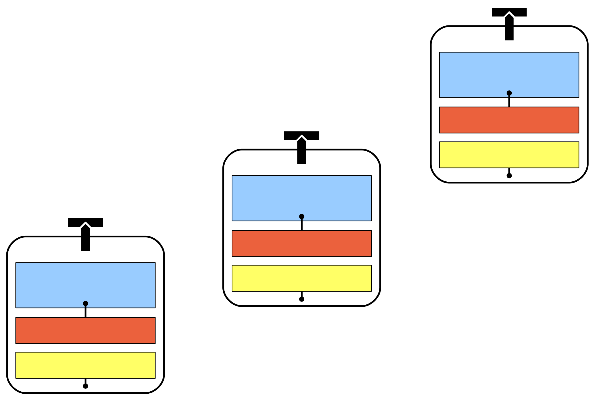
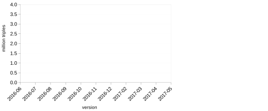
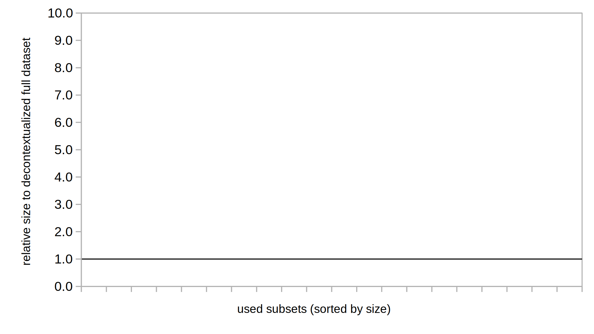
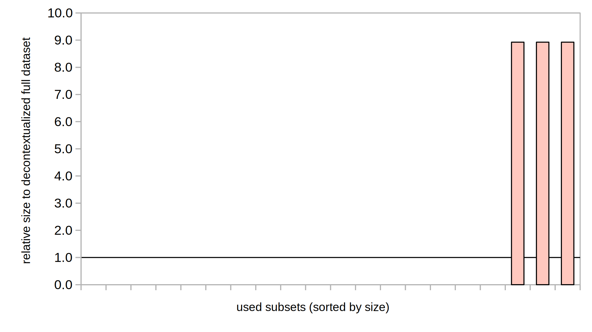
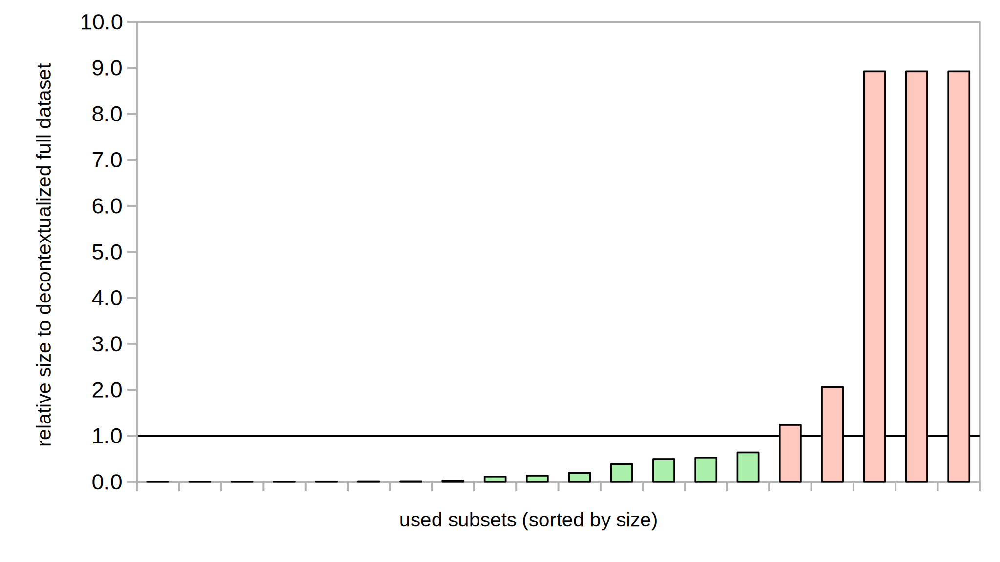

Reliable Granular References to Changing Linked Data
Tobias Kuhn, Egon Willighagen, Chris Evelo, Núria Queralt-Rosinach, Emilio Centeno, Laura I. Furlong
International Semantic Web Conference (ISWC)
Vienna, 2017
These slides: http://purl.org/tkuhn/presentations/iswc2017-nanodiff
Reproducibility

Reproducible (Linked) Data Science is complicated...
Reproducible (Linked) Data Science is Complicated
Even just specifying the used input data is complicated, because:
- We often use multiple datasets from different third parties
- But often just specific subsets of these datasets
- And they often have many different versions
- And finally we publish everything in papers, which are not designed to reproducibly report such studies
Specify Input Data:
Current Best Practice
In papers:
"... we used DisGeNET-RDF version 4.0 [32]"
In code:
wget http://rdf.disgenet.org/download/v4.0.0/gda.ttl.gz # Run analysis here
Requirements and Related Work
We need:
- Linked Data versioning
- Cryptographically reliable dataset identifiers
- References to subsets of larger datasets
Related work exists for each of these points individually, but not for their combination.
Nanopublications

Trusty URIs make resources ...
Trusty Nanopublications

Trusty Nanopublications
Trusty Nanopublications

Trusty Nanopublications

A Server Network for Nanopublications

9M Nanopublications on the Server Network
The "Overhead" of Nanopublications

Decontextualizing
For comparison, we can decontextualize the triples of the nanopublications of a given dataset:
- Attach provenance/metadata to entire dataset (instead of individual nanopublication)
- Drop context (graph) URI
- Then count unique triples
Measures hypothetical size of a nanopublication dataset if no nanopublications would have been used
Decontextualized Datasets
| Dataset | relative size after decontextualization |
|---|---|
| LIDDI | 82% |
| neXtProt | 55% |
| GeneRIF-AIDA | 43% |
| DisGeNET v4.0.0.0 | 14% |
| DisGeNET v3.0.0.0 | 14% |
| DisGeNET v2.1.0.0 | 14% |
| OpenBEL 20131211 | 69% |
| OpenBEL 1.0 | 69% |
Can we better represent the overlap between dataset versions to counter this significant overhead?
Approach: Granual Versioning
Approach: Granual Versioning

Approach: Granual Versioning
Approach: Granual Versioning
Approach: Granual Versioning
Approach: Granual Versioning

Approach: Granual Versioning

Approach: Granual Versioning

Approach: Granual Versioning
Approach: Granual Versioning

Approach: Granual Versioning
Approach: Granual Versioning

Approach: Granual Versioning
Approach: Granual Versioning
Approach: Granual Versioning

Evaluation 1
How well does it work on the data publisher side?

Evaluation based on WikiPathways, a community-curated open database of biological pathways:
- ~ 10 000 nanopublications
- Monthly releases over 11 months
WikiPathways Versions
WikiPathways Versions
WikiPathways Versions
WikiPathways Versions
WikiPathways Versions

Evaluation 2
How well does it work on the data consumer side?
Evaluation based on DisGeNET, a database on human diseases and their related genes:
- 1 414 902 nanopublications in version 4.0
- Highly cited: 31 publications in 2017 (until 5 May)
Used DisGeNET Subsets

Used DisGeNET Subsets

Sizes of DisGeNET Subsets (Compared to Decontextualized Full Dataset)
Sizes of DisGeNET Subsets (Compared to Decontextualized Full Dataset)
Sizes of DisGeNET Subsets (Compared to Decontextualized Full Dataset)
Time to Download Typical Subset
Downloading full dataset from DisGeNET server
VERSUS
Downloading 18 098 nanopublications through the server network

Data Publishing with Nanopublication Datasets
Researchers can now exactly specify their input data.
In papers:
"... we used DisGeNET data [27] about these diseases"
[27] Nanopublications from DisGeNET v4.0.0.0 about umls:C0003507 or umls:C1956346. http://purl.org/np/RAcf4tihZLL_aK81hwThIrNxjOhks4sEloBStEgzyR1tI, 11 May 2017.
In code:
np get -c -o data.trig \
RAcf4tihZLL_aK81hwThIrNxjOhks4sEloBStEgzyR1tI
# Run analysis here
Nanopublication Overhead Disappears
Price of nanopublications is offset by:
- the benefits of incremental versioning
- by being able to refer to needed subset
Querying the Nanopublication Cloud
TODO